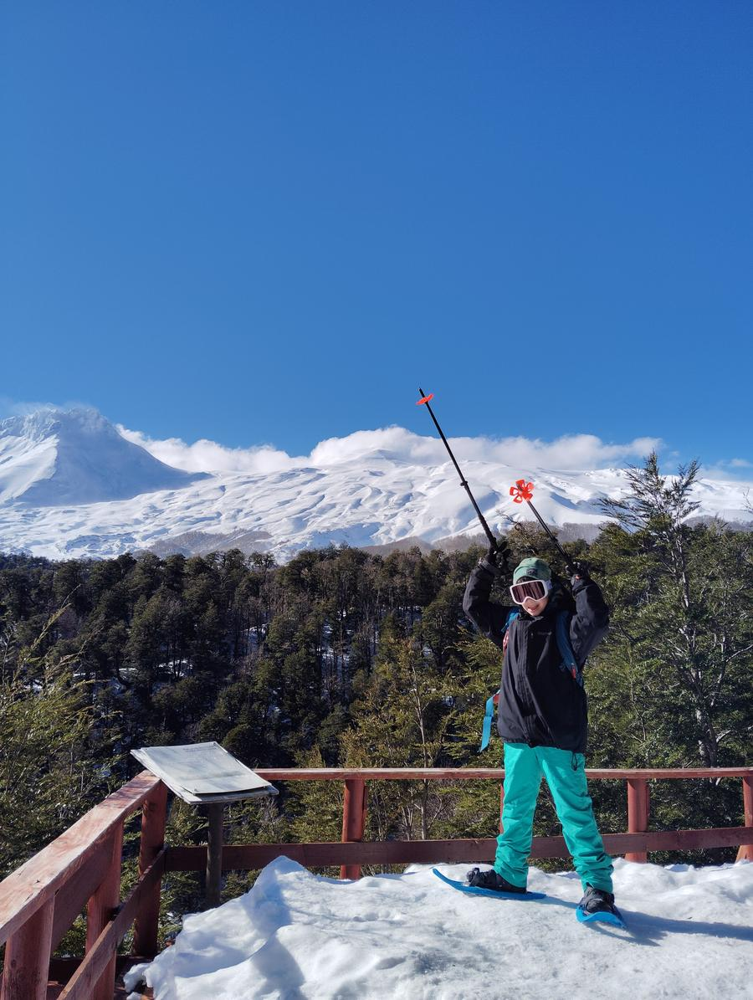

Inicio / Experiencias / Raquetas de Nieve Familiar
Familiar · Destino Mocho Choshuenco, Los Ríos
Raquetas de Nieve Familiar
Caminata en raquetas por senderos nevados de baja y media dificultad.

- Duración
- 3–4 h
- Altitud / tramo
- 900–1.300 m
- Nivel
- Básico
- Temporada
- Junio a septiembre
- Edad
- Desde 8 años
- Guía : pax
- 1:8
Incluye y detalles
- Raquetas de nieve y bastones
- Requiere al menos 20 cm de nieve
Todas nuestras experiencias incluyen guía registrado en SERNATUR, equipo técnico, ticket de ingreso a áreas protegidas, traslado desde Choshuenco, snack, registro fotográfico, equipos de comunicación y rescate, y seguro de accidentes.
Por persona: $50.000
Consultar por WhatsAppOperador local autorizado
Registro SERNATUR N° 108568 · Permiso CONAF en áreas protegidas · Trip leader guía de Media Montaña ANGM N° 37028.
Registro SERNATUR N° 108568 · Permiso CONAF en áreas protegidas · Trip leader guía de Media Montaña ANGM N° 37028.